SVS'" />SVS Oman 2027 — Smart Vision Summit Muscat Platform
A full-stack event management platform for Smart Vision Summit Oman 2027 — a two-day investment and capital markets summit at the JW Marriott Muscat Hotel, 27–28 January 2027. SVS expands into Oman, bringing together investors, financial professionals, fintech innovators, and market leaders to explore investment strategies, market trends, and technological advancements reshaping the Middle East's financial landscape. Built on Laravel & PHP, delivering the public website, attendee registration, QR ticketing, real-time door scanning, 5-tier sponsorship packages, and full admin dashboard.

Project Overview
SVS Oman 2027 marks Smart Vision Summit's entry into the Sultanate of Oman — held on 27–28 January 2027 at the JW Marriott Muscat Hotel. Billed as the largest educational conference on investment and capital markets in the Middle East, SVS Oman brings together investors, financial professionals, fintech innovators, entrepreneurs, and market leaders from across the Gulf and beyond.
The summit covers a comprehensive agenda: keynote speeches, panel discussions, workshops, and networking sessions focused on investment strategies, market trends, technological advancements, risk management, and regulatory updates. The event helps attendees enhance their understanding of the financial landscape, discover new investment opportunities, and stay ahead in an ever-evolving industry — with Oman's growing position as a GCC financial hub making it a strategic SVS destination.
The platform is built on the proven SVS Laravel/PHP architecture — powering the complete event management system: a public summit website with SEO for Oman and the GCC market, online attendee registration with automated QR ticket generation and email delivery, five-tier sponsorship packages with a Become a Sponsor application, full admin dashboard for the Smart Vision team, and a real-time QR door scanner for event-day entry at the JW Marriott Muscat.
System Components
The public summit website showcases all event information — JW Marriott Muscat venue, summit overview, January 27–28 dates, a promo video section (Multi Media), past event gallery, sponsorship packages, contact, and a persistent sticky bar with live countdown, WhatsApp direct contact, Register Now, and Become Sponsor CTAs.
Attendees register online — complete their details, choose their attendance package, and automatically receive a branded email with their unique QR ticket as a PDF. All registrations are tracked in real time in the admin dashboard, with full status management and manual ticket issuance/revocation.
The Smart Vision team manages all aspects of the summit — attendee registrations, sponsor application review, manual QR ticket issuance, real-time entry scanning on summit day, and comprehensive reports on attendance and sponsorship.
Every registered attendee receives a unique branded QR ticket as a PDF email. On summit day at the JW Marriott Muscat, door staff validate tickets in real time — green valid, red invalid or already scanned. Anti-duplicate protection prevents any ticket being used more than once, and every scan is logged with a timestamp.
Five sponsor tiers are publicly showcased with detailed benefits per tier — magazine ads, VIP permits, panel discussions, seminar & speaker slots, roll-up/flag spaces, branded venue placement, ADV on website & media partners, press interviews, email campaigns, and logo in email footer. Companies apply via the 'Become a Sponsor' page, feeding directly into the admin for Smart Vision's review, approval, and follow-up.
5-Tier Sponsorship Packages
SVS Oman offers the same five-tier sponsorship structure used across all SVS editions — giving sponsors a clear, tiered progression of visibility and benefits from the top Official Sponsor level down to Platinum.
Key Features
Outcomes
Technical Challenges
Unlike a returning edition like SVS Bahrain, SVS Oman is entering a new market with no prior SVS presence. The platform must work harder at credibility-building — showcasing the SVS brand's 15+ years of event experience, cross-country track record (Kuwait, Bahrain, Morocco, Egypt, and more), past event photos/videos, and the JW Marriott Muscat as an internationally recognized venue — to convert first-time Omani sponsors and attendees into committed participants.
With SVS Oman 2027 scheduled for January 27–28, 2027 and the platform live in May 2026, the system must support an 8+ month registration and sponsorship pipeline. The live countdown, persistent WhatsApp CTA, and Become a Sponsor flow must maintain engagement and drive conversions across this long timeline — tracking attendees from initial registration through to event-day QR ticket scanning at the JW Marriott Muscat.
SVS Oman runs on the same core Laravel/PHP platform as all other SVS editions, but must be independently deployed on its own subdomain (oman.smartvisionsummit.com) with its own content, SEO, branding, venue details, date, and admin setup. Every new SVS country edition adds to multi-instance management complexity — ensuring configuration changes, security patches, and feature updates can be applied consistently across all active SVS editions without cross-edition conflicts or downtime.